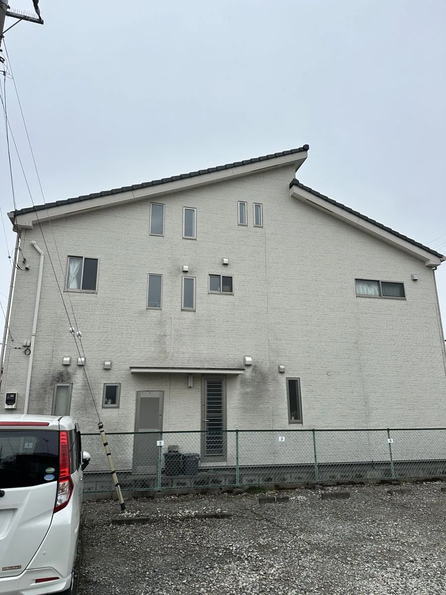
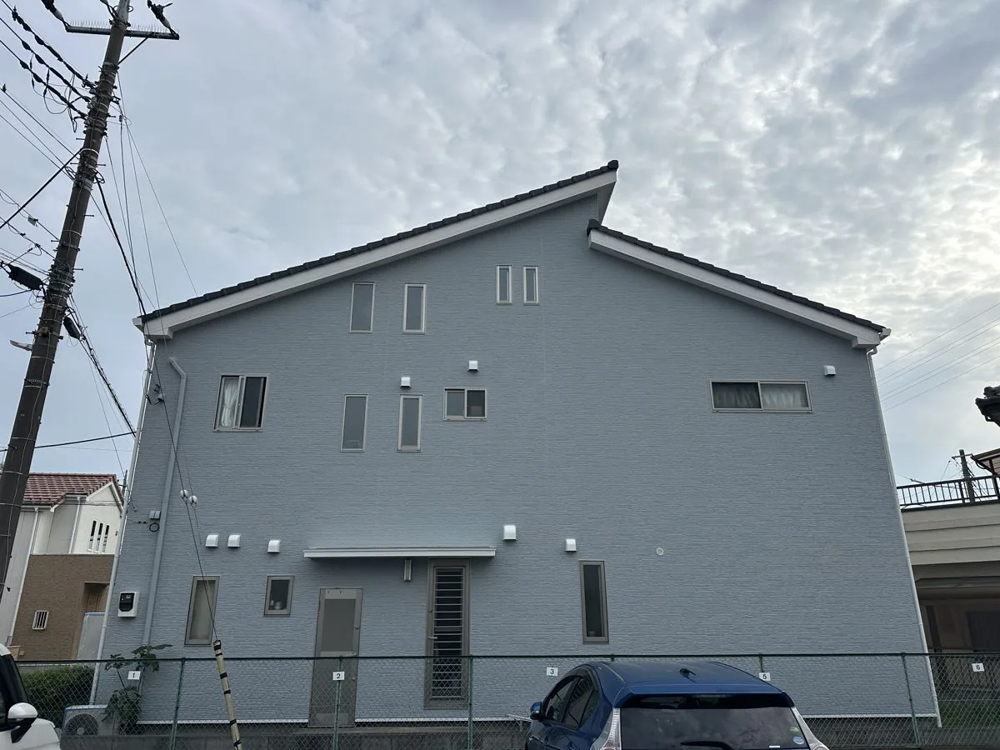
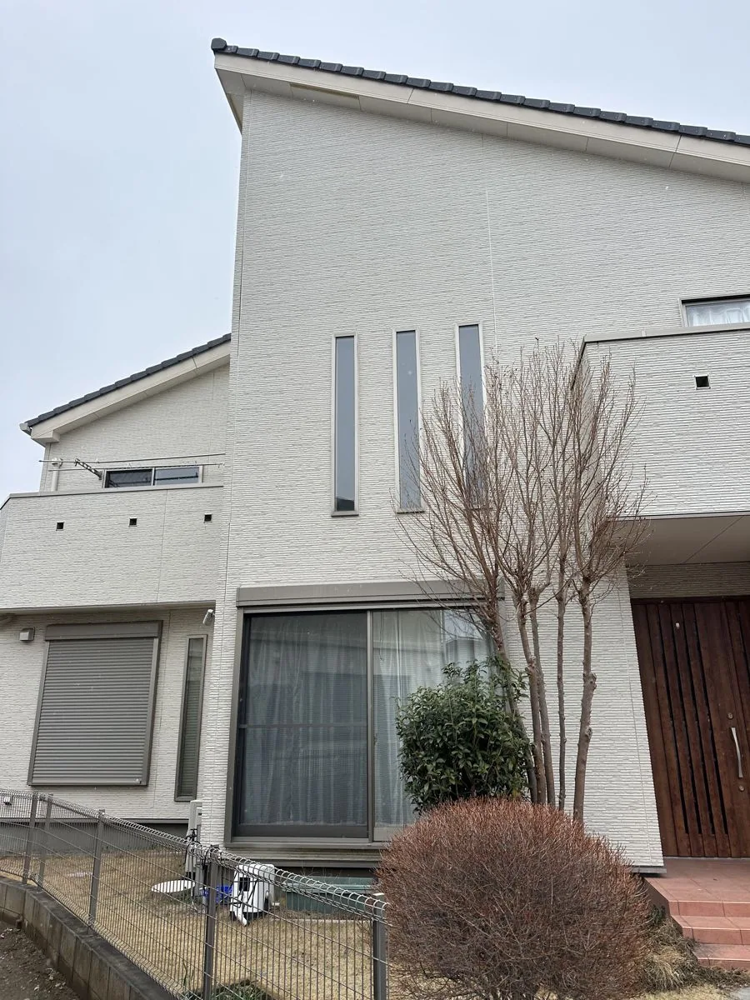
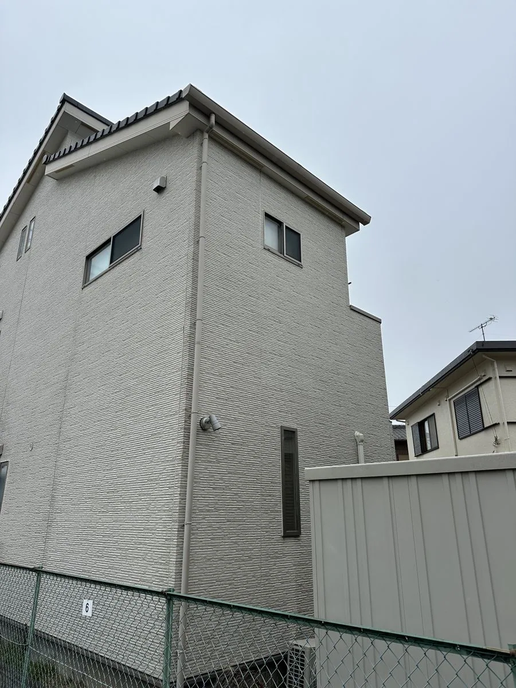
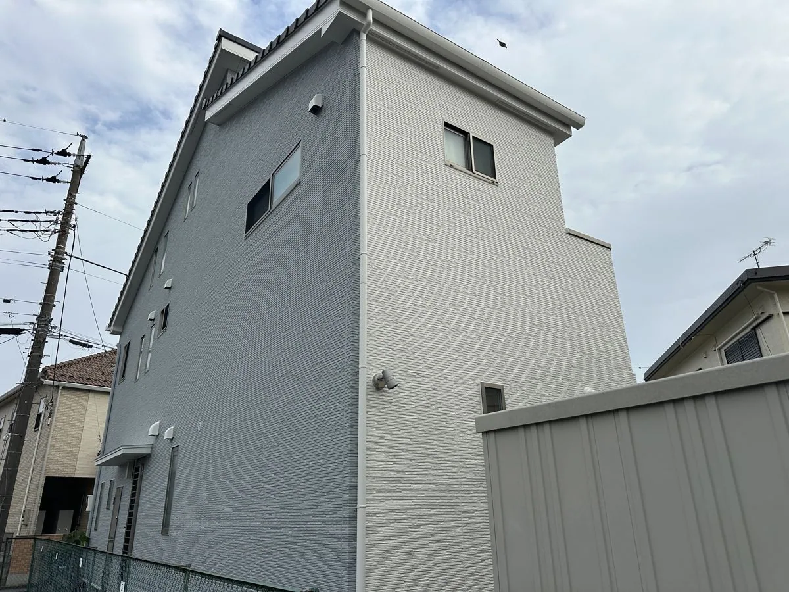
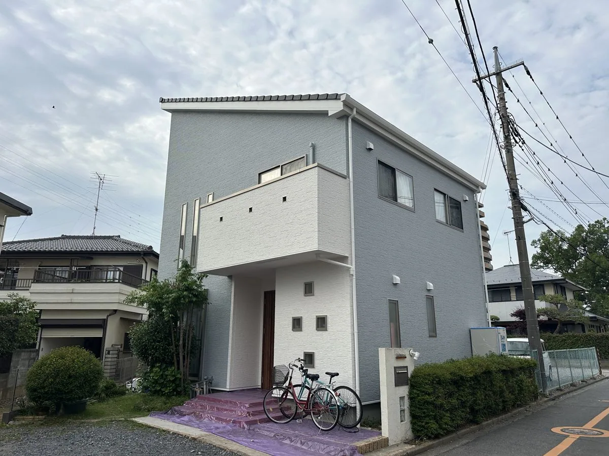

施工事例 ／ 桶川市鴨川
桶川市鴨川の外壁塗装施工事例
色を変えて、印象を一新する
桶川市鴨川 F様邸 ／ 築16年・窯業系サイディング ／ 2025年4月〜5月施工

色を変えて、印象を一新する
桶川市鴨川 F様邸 ／ 築16年・窯業系サイディング ／ 2025年4月〜5月施工
築16年、横ライン調の窯業系サイディングのお住まいです。北面には換気フード下からの黒い雨だれが目立ち、目地のコーキングも硬化が進んでいました。
屋根は瓦だったため、塗装は不要と判断しています。釉薬をかけた瓦は表面がガラス質で保護されており、塗る必要がありません。外壁と付帯部に絞ってご提案しました。
色は、納得いくまで打ち合わせを重ねました。本体をライトブルーグレー、バルコニーと玄関まわりの張り出し部分をホワイトに塗り分けています。出っ張った部分を明るくすると、建物に立体感が出て大きく見えます。
| 所在地 | 埼玉県桶川市鴨川 |
|---|---|
| 築年数 | 築16年 |
| 外壁材 | 窯業系サイディング（横ライン調） |
| 屋根材 | 瓦（塗装なし） |
| 工事内容 | 外壁塗装・付帯部塗装（屋根は瓦のため施工なし） |
| 使用塗料 | 外壁：日本ペイント パーフェクトトップ 鉄部・付帯部：日本ペイント ファインSi 軒天：日本ペイント 水性ケンエース |
| 使用色 | 外壁：ライトブルーグレー バルコニー・玄関まわり：ホワイト |
| 費用 | 120〜150万円（税込） |
| 工期 | 約1ヶ月 |
| 施工時期 | 2025年4月 〜 5月 |


日当たりの悪い北面。換気フードの下から黒い雨だれが流れていました。高圧洗浄で落としきってから塗装しています。

ベージュ系からライトブルーグレーへ。玄関まわりとバルコニーはホワイトで塗り分けています。


外壁をライトブルーグレーにし、前に張り出した部分をホワイトに塗り分けて立体感を出しています。

屋根は瓦のため塗装せず、外壁と付帯部を中心に施工しています。
外壁の塗替えは築10年を超えた頃から常に頭の片隅にあったものの、その費用と効果の年数を考えるとなかなか決めきれず4年ほど経過していました。そんな時、親身に相談にのってくれたこちらに決めました。特によかった点は、以下の通りです。
結果、私たち家族は120%大満足でした！！
釉薬をかけた瓦は表面がガラス質で保護されているため、塗装の必要がありません。桶川市は瓦のお宅も多いエリアです。屋根材を確認したうえで、塗る必要があるかどうかをご説明します。
換気フードの下に出る黒い筋は、汚れの上から塗ってもすぐに再発します。高圧洗浄で下地から落としてから塗装することが前提です。
バルコニーや玄関ポーチのように前に出ている部分を明るい色にすると、影とのコントラストで建物が立体的に見えます。1色で塗るか塗り分けるかで印象は大きく変わるので、色決めの段階でご提案しています。
A. 必ずではありません。このお宅は瓦屋根だったため屋根塗装は行わず、外壁と付帯部を中心に施工しました。
写真を送っていただければ、AIで色のイメージを作ってお見せできます。決めきれずに何年も迷っている、という段階のご相談も歓迎です。